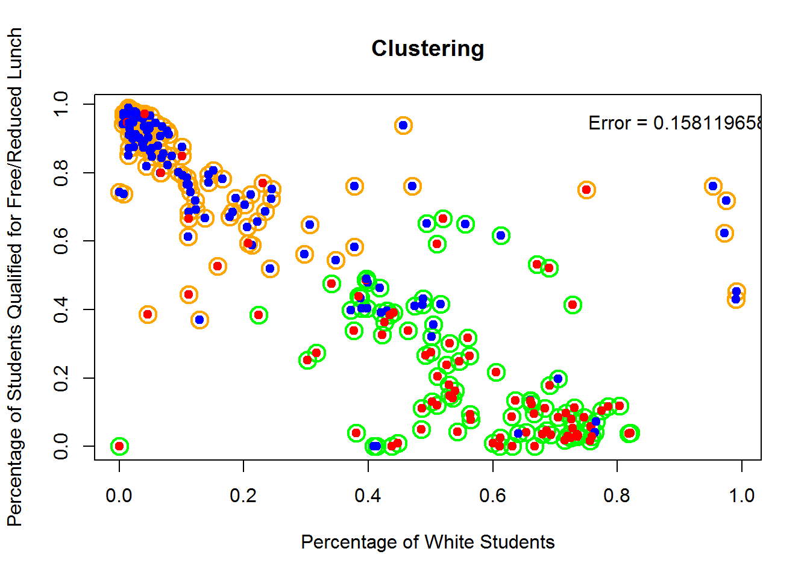
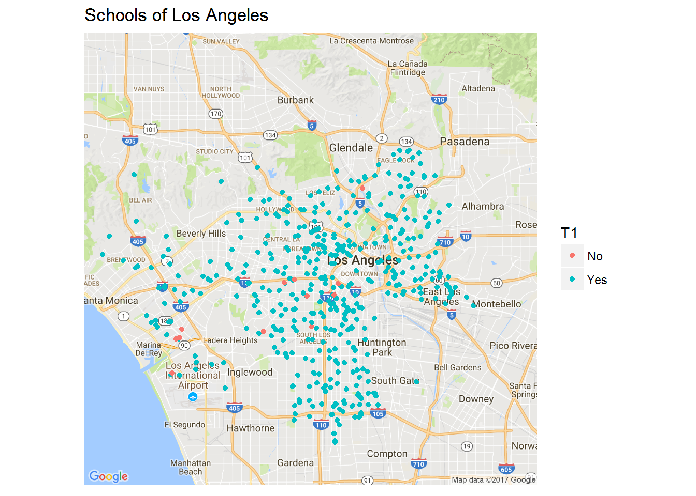

- R Session Info
- Github Link
- Data.world Link
- Decision Tree Predicting Title 1 Eligibility
- SVM Model of Title 1 eligibility
- Random Forest of Title 1 Eligibility
- Clustering of school type based on the student teacher ratio and diversity index
- Title I Eligibility by Location
- Do all eligible schools receive Title 1 funding?
- Eligible schools, pt. 1
- Eligible schools, pt. 2
- Eligible schools, pt. 3
- Eligible schools, pt. 4
- Eligible schools, conclusion
Project4
Group 10: Nathan Caldwell, Isabel Cachola, Edward Gunawan, Weiyi Wang
R Session Info
sessionInfo()## R version 3.3.2 (2016-10-31)
## Platform: x86_64-w64-mingw32/x64 (64-bit)
## Running under: Windows 10 x64 (build 14393)
##
## locale:
## [1] LC_COLLATE=English_United States.1252
## [2] LC_CTYPE=English_United States.1252
## [3] LC_MONETARY=English_United States.1252
## [4] LC_NUMERIC=C
## [5] LC_TIME=English_United States.1252
##
## attached base packages:
## [1] parallel splines stats graphics grDevices utils datasets
## [8] methods base
##
## other attached packages:
## [1] knitr_1.15.1 gbm_2.1.3 lattice_0.20-34
## [4] survival_2.39-5 ggmap_2.6.1 mapdata_2.2-6
## [7] maps_3.2.0 randomForest_4.6-12 e1071_1.6-8
## [10] tree_1.0-37 boot_1.3-18 leaps_3.0
## [13] glmnet_2.0-13 foreach_1.4.3 Matrix_1.2-7.1
## [16] ISLR_1.1 dwapi_0.1.1 data.world_1.1.1
## [19] dplyr_0.5.0 purrr_0.2.2 readr_1.0.0
## [22] tidyr_0.6.1 tibble_1.3.0 ggplot2_2.2.1
## [25] tidyverse_1.1.1 shiny_1.0.0
##
## loaded via a namespace (and not attached):
## [1] httr_1.2.1 jsonlite_1.3 modelr_0.1.1
## [4] assertthat_0.1 highr_0.6 sp_1.2-4
## [7] cellranger_1.1.0 yaml_2.1.14 backports_1.0.5
## [10] digest_0.6.11 RColorBrewer_1.1-2 rvest_0.3.2
## [13] colorspace_1.3-2 htmltools_0.3.5 httpuv_1.3.3
## [16] plyr_1.8.4 psych_1.7.8 broom_0.4.2
## [19] haven_1.1.0 xtable_1.8-2 scales_0.4.1
## [22] jpeg_0.1-8 lazyeval_0.2.0 mnormt_1.5-5
## [25] proto_1.0.0 magrittr_1.5 readxl_1.0.0
## [28] mime_0.5 evaluate_0.10 nlme_3.1-128
## [31] forcats_0.2.0 xml2_1.1.1 foreign_0.8-67
## [34] class_7.3-14 tools_3.3.2 hms_0.3
## [37] geosphere_1.5-7 RgoogleMaps_1.4.1 stringr_1.1.0
## [40] munsell_0.4.3 grid_3.3.2 iterators_1.0.8
## [43] rjson_0.2.15 labeling_0.3 rmarkdown_1.3
## [46] gtable_0.2.0 codetools_0.2-15 DBI_0.5-1
## [49] curl_2.4 reshape2_1.4.2 R6_2.2.0
## [52] ini_0.2 lubridate_1.6.0 rprojroot_1.2
## [55] stringi_1.1.2 Rcpp_0.12.10 mapproj_1.2-5
## [58] png_0.1-7Github Link
Data.world Link
Decision Tree Predicting Title 1 Eligibility
Creating a decision tree that attempts to predict whether or not a school is Title 1 eligible.
#require(MASS)
require(ISLR)
require(tidyverse)
require(dplyr)
require(data.world)
require(ggplot2)
require(glmnet)
require(leaps)
require(boot)
require(tree)
project<- "https://data.world/wangweiyi722/f-17-eda-project-4"
data.world::set_config(cfg_env("DW_API"))
df_w <- data.world::query(
data.world::qry_sql("SELECT * FROM Title1EligibilityPredictors"),
dataset = project
)
attach(df_w)## The following objects are masked from df_w_complete (pos = 3):
##
## title_1_eligible, urban_locale## The following objects are masked from df_w (pos = 4):
##
## percent_free_red_lunch, percent_minority, title_1_eligible,
## urban_locale## The following objects are masked from df_w_complete (pos = 14):
##
## title_1_eligible, urban_locale## The following objects are masked from df_w (pos = 17):
##
## percent_free_red_lunch, percent_minority, title_1_eligible,
## urban_localeset.seed(1011)
df_w_clean = df_w[title_1_eligible != "Missing",]
df_w_clean = df_w_clean[complete.cases(df_w_clean),]
eligibility = df_w_clean$title_1_eligible
df_w_clean = data.frame(df_w_clean,eligibility)
train=sample(1:nrow(df_w_clean),85000)
tree.df_w=tree(eligibility~.-title_1_eligible,data=df_w_clean,subset=train)## Warning in tree(eligibility ~ . - title_1_eligible, data = df_w_clean,
## subset = train): NAs introduced by coercionsummary(tree.df_w)##
## Classification tree:
## tree(formula = eligibility ~ . - title_1_eligible, data = df_w_clean,
## subset = train)
## Variables actually used in tree construction:
## [1] "percent_free_red_lunch" "percent_minority"
## Number of terminal nodes: 5
## Residual mean deviance: 0.9414 = 80010 / 85000
## Misclassification error rate: 0.2462 = 20929 / 85000plot(tree.df_w)
text(tree.df_w,pretty=0)tree.pred=predict(tree.df_w,df_w_clean[-train,],type="class")## Warning in pred1.tree(object, tree.matrix(newdata)): NAs introduced by
## coercionwith(df_w_clean[-train,],table(tree.pred,eligibility))## eligibility
## tree.pred No Yes
## No 1642 1521
## Yes 678 5120SVM Model of Title 1 eligibility
Attempt to create a SVM that predicts title 1 eligibility based on the cultural diversity of the school and the student teacher ratio.
df_svm <- data.world::query(
data.world::qry_sql("SELECT * FROM Racial_Spread_and_S_T_Ratio"),
dataset = project
)
df_svm_clean = df_svm[df_svm$diversity_index>=0 & df_svm$american_indian+df_svm$asian+df_svm$hispanic+df_svm$black+df_svm$white+df_svm$pacific+df_svm$mixed_race>0 & df_svm$student_teacher_ratio<32,]
plot(df_svm_clean$diversity_index,df_svm_clean$student_teacher_ratio, col = ifelse(df_svm_clean$title_1_eligible=='Yes',"Blue","Red"),main = "Scatterplot of Student Teacher Ratio vs Diversity Index",xlab = "Diversity Index", ylab = "Student Teacher Ratio",pch = 16, cex = .1)From the scatterplot, There appears to be no distinct pattern of whether the school is eligible for title 1 or not based on these two predictors. Let’s see what a generated svm model says.
library(e1071)
set.seed(1996)
svm_dat=data.frame(df_svm_clean$student_teacher_ratio,df_svm_clean$diversity_index,y=as.factor(df_svm_clean$title_1_eligible))
svm_dat=svm_dat[svm_dat$y!="Missing",]
svm_dat = svm_dat[sample(nrow(svm_dat),100),] # get a random sample of 100, svm() takes too long if used with full data set
svm_fit=svm(svm_dat$y~.,data=svm_dat,kernel="radial",cost=30,scale=FALSE)
print(svm_fit)##
## Call:
## svm(formula = svm_dat$y ~ ., data = svm_dat, kernel = "radial",
## cost = 30, scale = FALSE)
##
##
## Parameters:
## SVM-Type: C-classification
## SVM-Kernel: radial
## cost: 30
## gamma: 0.5
##
## Number of Support Vectors: 76plot(svm_fit,svm_dat)make.grid=function(x,n=75){
grange=apply(x,2,range)
x1=seq(from=as.double(grange[1,1]),to=as.double(grange[2,1]),length=n)
x2=seq(from=as.double(grange[1,2]),to=as.double(grange[2,2]),length=n)
expand.grid(X1=x1,X2=x2)
}
xgrid=make.grid(data.frame(svm_dat$df_svm_clean.student_teacher_ratio,svm_dat$df_svm_clean.diversity_index))
colnames(xgrid)[1]="df_svm_clean.student_teacher_ratio"
colnames(xgrid)[2]="df_svm_clean.diversity_index"
ygrid=predict(svm_fit,xgrid)
plot(xgrid,col=c("red","blue","red")[as.numeric(ygrid)],pch=20,cex=.2,main = "Svm of Student Teacher Ratio vs Diversity Index",ylab = "Diversity Index", xlab = "Student Teacher Ratio")
points(svm_dat,col=ifelse(as.numeric(svm_dat$y)==3,"red","blue"),pch=19)
points(svm_dat[svm_fit$index,],pch=5,cex=1.5)Random Forest of Title 1 Eligibility
Applying random forest to the decision tree model to find the best possible model for Title 1 eligibility based on the .
require(randomForest)
df_w_complete <- data.world::query(
data.world::qry_sql("SELECT type,status,urban_locale,title_1_eligible,full_time_teachers, member/full_time_teachers as student_teacher_ratio,total_lunch/member as percent_lunch_program,am/member as percent_american_indian,asian/member as percent_asian,hisp/member as percent_hispanic,black/member as percent_black,white/member as percent_white, pacific/member as percent_pacific_islander,tr/member as percent_mixed FROM SchoolSurvey WHERE member>0 AND full_time_teachers>0 and total_lunch/member>0 AND title_1_eligible!='Missing'"),
dataset = project
)
df_w_complete = df_w_complete[complete.cases(df_w_complete),]
attach(df_w_complete)## The following objects are masked from df_w (pos = 3):
##
## title_1_eligible, urban_locale## The following objects are masked from df_w_complete (pos = 4):
##
## full_time_teachers, percent_american_indian, percent_asian,
## percent_black, percent_hispanic, percent_lunch_program,
## percent_mixed, percent_pacific_islander, percent_white,
## status, student_teacher_ratio, title_1_eligible, type,
## urban_locale## The following objects are masked from df_w (pos = 5):
##
## title_1_eligible, urban_locale## The following objects are masked from df_w_complete (pos = 15):
##
## full_time_teachers, percent_american_indian, percent_asian,
## percent_black, percent_hispanic, percent_lunch_program,
## percent_mixed, percent_pacific_islander, percent_white,
## status, student_teacher_ratio, title_1_eligible, type,
## urban_locale## The following objects are masked from df_w (pos = 18):
##
## title_1_eligible, urban_localeset.seed(1996)
# cull the data because r has trouble handling 100k rows of data with the pairs function
df_w_sample = df_w_complete[sample(nrow(df_w_complete),5000),]
df_w_train = sample(1:nrow(df_w_complete),5000)
pairs(df_w_sample[,5:14])oob.err=double(10)
test.err=double(10)
numeric_df_w = data.frame(ifelse(title_1_eligible=="Yes",1,0),full_time_teachers,student_teacher_ratio,percent_lunch_program,percent_american_indian,percent_asian,percent_black,percent_hispanic,percent_white,percent_pacific_islander,percent_mixed)
colnames(numeric_df_w)[1]="title_1_eligible"
for(mtry in 1:10){
school.fit=randomForest(title_1_eligible~.,data=numeric_df_w,subset=df_w_train,mtry=mtry,ntree=100)
oob.err[mtry]=school.fit$mse[100]
school.pred=predict(school.fit,numeric_df_w[-train,])
test.err[mtry]=with(numeric_df_w[-train,],mean((title_1_eligible-school.pred)^2))
#cat(mtry," ")
}## Warning in randomForest.default(m, y, ...): The response has five or fewer
## unique values. Are you sure you want to do regression?
## Warning in randomForest.default(m, y, ...): The response has five or fewer
## unique values. Are you sure you want to do regression?
## Warning in randomForest.default(m, y, ...): The response has five or fewer
## unique values. Are you sure you want to do regression?
## Warning in randomForest.default(m, y, ...): The response has five or fewer
## unique values. Are you sure you want to do regression?
## Warning in randomForest.default(m, y, ...): The response has five or fewer
## unique values. Are you sure you want to do regression?
## Warning in randomForest.default(m, y, ...): The response has five or fewer
## unique values. Are you sure you want to do regression?
## Warning in randomForest.default(m, y, ...): The response has five or fewer
## unique values. Are you sure you want to do regression?
## Warning in randomForest.default(m, y, ...): The response has five or fewer
## unique values. Are you sure you want to do regression?
## Warning in randomForest.default(m, y, ...): The response has five or fewer
## unique values. Are you sure you want to do regression?
## Warning in randomForest.default(m, y, ...): The response has five or fewer
## unique values. Are you sure you want to do regression?matplot(1:mtry,cbind(test.err,oob.err),pch=19,col=c("red","blue"),type="b",ylab="Mean Squared Error")#+legend("right",legend=c("Test","OOB"),pch=19,col=c("red","blue"))# Based on the error plots, I decided to create the model using mtry = 2
school.fit=randomForest(title_1_eligible~.,data=numeric_df_w,subset=df_w_train,mtry=2,ntree=100)## Warning in randomForest.default(m, y, ...): The response has five or fewer
## unique values. Are you sure you want to do regression?school.pred=predict(school.fit,numeric_df_w[-df_w_train,])
table(round(school.pred),numeric_df_w[-df_w_train,]$title_1_eligible)##
## 0 1
## 0 8570 4441
## 1 10376 55933(13844+37383)/(13844+26564+6229+37383)## [1] 0.6097001Clustering of school type based on the student teacher ratio and diversity index
Here I use k-means clustering to see if any clear clusters of data can be formed for the schools based on student teacher ratio and diversity index.
set.seed(1996)
df_cluster = df_w_complete
df_cluster = df_cluster[complete.cases(df_cluster),]
df_cluster = df_cluster[student_teacher_ratio<1500,]
df_cluster = df_cluster[df_cluster$type != "Regular School",]
school_type = df_cluster$type
df_school_type = data.frame(school_type)
colnames(df_school_type)[1]="School_Type"
div_ind = 1-df_cluster$percent_american_indian^2-df_cluster$percent_asian^2-df_cluster$percent_hispanic^2-df_cluster$percent_black^2-df_cluster$percent_white^2-df_cluster$percent_pacific_islander^2-df_cluster$percent_mixed^2
df_cluster = data.frame(df_cluster$student_teacher_ratio,div_ind)
plot(df_cluster,col=as.factor(school_type),pch=16,cex=.5,main="Scatterplot of Student Teacher Ratio and Diversity Index",ylab="Diversity_index",xlab="Student Teacher Ratio")#+legend("topright",legend=c("Other/Alternative","Special Ed","Vocational","Reportable Program"),pch=19,col=c("black","red","green","blue"))color_eq = data.frame(c("Special education School","Vocational School","Other/alternative School","Reportable Program"),c(2,1,4,3))
colnames(color_eq)[1]="School_Type"
colnames(color_eq)[2]="Color"
merged_colors = merge(df_school_type,color_eq,by = "School_Type",all= TRUE)
km.schools=kmeans(df_cluster,4,nstart=15)
km.schools## K-means clustering with 4 clusters of sizes 720, 59, 4, 3794
##
## Cluster means:
## df_cluster.student_teacher_ratio div_ind
## 1 31.500294 0.3934774
## 2 119.545173 0.3612379
## 3 691.314560 0.4485459
## 4 9.815783 0.4294277
##
## Clustering vector:
## [1] 1 1 4 4 4 4 4 4 4 4 4 4 4 4 4 4 4 4 4 4 4 4 4 4 4 4 4 4 4 4 4 4 4 4
## [35] 4 4 4 4 4 4 4 4 4 4 4 4 4 4 4 2 4 4 4 4 4 4 4 4 4 4 4 4 1 4 1 4 4 4
## [69] 4 4 4 4 4 4 4 4 4 4 4 4 4 4 4 4 4 4 4 4 4 4 4 4 4 4 4 4 4 4 4 4 4 4
## [103] 4 4 4 4 4 4 4 4 4 4 4 4 4 4 4 4 4 4 4 4 4 1 4 4 4 4 4 4 4 4 4 4 4 4
## [137] 1 4 4 4 4 4 4 4 4 4 4 4 4 4 1 4 4 4 4 4 4 4 4 4 4 4 4 4 4 4 4 1 4 4
## [171] 4 4 4 4 4 4 4 4 4 1 4 1 4 4 4 4 4 4 1 4 4 4 4 1 4 4 4 4 4 4 4 4 4 4
## [205] 4 4 4 4 4 4 4 4 4 4 4 4 4 4 4 4 4 4 4 4 4 4 4 4 4 4 4 4 4 4 4 4 4 4
## [239] 4 4 4 4 4 4 4 4 4 4 4 4 4 4 4 4 4 4 4 4 4 4 4 4 4 4 4 4 4 4 4 4 4 4
## [273] 4 4 4 4 4 4 4 4 4 4 4 4 4 4 4 2 4 4 4 1 4 4 4 4 4 4 4 4 4 4 4 4 4 4
## [307] 4 4 4 4 4 4 4 4 4 4 4 4 4 4 4 4 4 4 4 4 4 4 4 4 4 4 4 4 4 4 4 4 4 4
## [341] 4 4 4 4 4 4 4 4 4 4 4 4 4 4 4 4 4 4 4 4 4 4 4 4 4 4 4 4 4 4 4 4 4 4
## [375] 4 4 1 4 4 4 4 4 4 4 4 4 4 4 4 4 4 4 4 4 4 4 4 4 4 4 4 4 4 4 4 4 4 4
## [409] 4 4 4 4 4 1 4 4 4 4 2 4 4 4 1 1 1 4 4 4 4 1 1 1 1 1 1 1 1 4 1 1 1 4
## [443] 4 4 4 4 4 1 4 4 1 1 4 4 4 4 4 4 4 4 4 4 4 4 4 4 4 4 4 4 4 4 4 4 4 4
## [477] 4 4 4 4 4 4 4 4 4 1 4 4 4 4 4 4 4 4 4 4 4 4 4 4 4 4 4 4 4 4 4 4 4 4
## [511] 4 4 4 4 4 4 4 4 4 4 4 4 1 4 1 4 4 4 4 4 4 4 4 4 4 1 4 4 4 4 4 4 4 4
## [545] 4 4 4 4 4 1 4 1 4 4 4 4 4 4 4 4 4 4 4 4 4 4 4 4 4 4 4 4 4 4 3 4 4 1
## [579] 4 4 4 4 4 4 4 4 4 4 4 4 4 4 4 4 4 4 4 4 4 4 4 4 1 4 4 4 4 4 4 4 4 4
## [613] 4 4 4 4 4 4 4 4 4 1 4 4 4 4 4 4 4 4 4 4 4 4 4 4 4 4 4 4 4 4 4 4 4 4
## [647] 4 4 4 4 4 4 4 4 4 4 4 4 4 4 4 4 1 4 4 4 4 4 4 4 4 4 4 4 4 1 4 4 4 4
## [681] 4 4 4 4 4 4 4 4 4 4 1 4 4 4 4 1 4 4 4 4 4 4 4 4 4 4 4 4 4 4 4 4 4 4
## [715] 4 4 4 4 4 4 4 4 4 1 4 4 4 4 4 4 4 4 4 4 4 4 4 1 4 4 4 4 4 4 4 4 4 4
## [749] 4 4 4 4 4 4 4 4 4 4 4 4 4 4 4 4 4 4 4 4 4 4 4 4 4 4 4 4 4 4 4 4 4 4
## [783] 4 4 4 4 4 4 4 4 4 4 4 4 4 4 1 4 4 4 4 4 4 4 4 4 4 4 4 1 4 4 4 4 4 4
## [817] 4 4 4 4 4 1 4 1 4 4 4 1 4 1 1 1 4 1 4 4 4 4 4 4 4 4 1 4 4 4 4 4 4 1
## [851] 4 2 4 4 4 4 4 4 4 4 4 4 4 4 4 4 4 4 4 4 4 4 4 4 4 4 4 4 1 4 4 4 4 4
## [885] 4 1 4 1 4 4 4 4 4 4 4 4 4 4 4 4 4 4 4 4 4 4 4 4 4 4 4 4 4 4 4 4 4 4
## [919] 4 4 4 4 4 4 4 4 4 4 4 4 1 4 4 1 4 4 4 4 4 4 4 4 4 4 4 4 4 1 4 4 4 4
## [953] 4 4 4 4 4 4 4 4 4 4 4 4 4 4 4 4 4 4 4 4 4 4 4 4 4 4 4 4 4 4 4 4 4 4
## [987] 4 4 4 4 4 4 4 4 4 4 4 4 4 4 4 4 4 4 4 4 4 4 4 4 4 4 4 4 4 4 4 4 4 1
## [1021] 4 4 1 4 4 4 4 4 4 4 4 4 4 4 4 4 4 4 4 4 4 4 4 4 4 4 4 4 4 4 2 4 4 4
## [1055] 4 4 4 1 4 4 4 4 4 4 4 4 4 4 4 4 4 4 4 4 1 1 2 4 4 4 4 2 2 4 4 4 4 4
## [1089] 4 4 4 4 4 4 4 4 4 4 4 4 4 4 4 4 4 4 4 1 4 4 4 4 4 4 4 4 4 4 4 4 4 4
## [1123] 4 4 4 4 4 4 4 4 4 4 4 4 1 4 4 4 4 4 4 4 4 4 4 4 4 4 1 4 4 4 4 4 4 4
## [1157] 4 4 4 4 4 4 4 4 4 4 4 4 4 4 4 4 4 4 4 4 4 4 4 4 4 4 4 4 4 4 4 4 4 4
## [1191] 4 4 4 4 4 4 4 4 4 4 4 4 4 4 4 4 4 4 4 4 4 4 4 4 4 4 4 4 4 4 4 4 4 4
## [1225] 4 4 4 4 4 4 4 4 4 4 4 4 4 4 4 4 4 4 4 4 4 4 4 4 4 4 4 4 4 4 4 4 4 4
## [1259] 4 4 4 4 4 4 4 4 4 4 4 4 4 4 4 4 4 4 4 4 4 4 4 4 4 4 4 4 4 4 4 4 4 4
## [1293] 4 4 4 4 1 4 4 4 4 4 4 4 4 4 4 4 4 4 1 4 4 4 4 4 4 4 1 1 4 4 4 4 4 4
## [1327] 4 4 4 1 1 1 1 4 4 4 1 4 1 4 4 1 1 4 1 1 4 1 4 1 4 1 4 4 1 1 4 4 4 1
## [1361] 4 1 4 2 1 1 4 4 4 4 1 1 4 4 4 4 1 4 4 1 1 1 2 2 4 4 1 4 1 4 4 4 1 4
## [1395] 4 4 4 1 4 1 1 1 1 2 1 4 1 4 1 4 4 1 2 4 4 4 1 4 4 4 1 1 1 4 4 4 4 1
## [1429] 4 4 4 1 1 1 4 4 4 1 4 1 1 1 4 1 4 1 1 4 4 4 4 1 4 4 1 4 4 1 4 4 1 4
## [1463] 1 2 1 4 4 4 4 4 4 4 4 4 1 1 1 1 4 1 4 1 1 4 1 4 1 4 4 4 1 1 1 4 4 4
## [1497] 1 4 4 4 4 4 1 4 1 4 4 4 1 4 4 1 4 4 4 1 4 4 4 4 4 1 1 1 2 1 4 1 4 4
## [1531] 4 4 4 4 4 4 4 1 4 1 4 4 4 4 4 4 4 1 4 1 1 4 4 1 1 2 4 1 1 4 4 1 2 4
## [1565] 4 4 1 4 4 1 4 4 4 4 4 4 1 4 4 4 4 4 1 1 4 4 4 4 4 1 1 1 4 1 4 4 4 4
## [1599] 4 1 4 4 1 4 1 4 4 1 4 4 4 4 4 4 4 4 4 4 4 4 4 1 1 1 4 4 4 4 4 4 4 4
## [1633] 4 4 4 4 4 4 1 4 4 4 4 4 4 4 4 4 4 4 4 4 4 4 4 4 4 4 4 4 4 4 4 4 4 4
## [1667] 4 4 4 4 4 4 4 4 4 4 4 4 4 4 4 4 4 4 4 4 4 4 4 4 4 4 4 4 4 4 4 4 4 4
## [1701] 4 4 4 4 4 4 4 4 4 4 4 4 4 4 4 4 4 4 4 4 4 4 4 4 4 4 4 4 1 4 1 4 4 4
## [1735] 4 4 4 4 4 4 4 4 4 4 4 4 4 4 4 4 4 4 4 4 4 4 4 4 2 4 4 4 4 4 4 4 4 4
## [1769] 4 4 4 4 4 4 4 4 4 4 4 4 4 4 4 4 2 4 4 4 4 4 4 4 4 4 4 4 4 4 4 4 4 4
## [1803] 4 4 4 4 4 4 4 4 4 4 4 4 4 4 4 4 4 1 4 4 4 4 1 4 1 4 4 4 4 4 4 4 4 4
## [1837] 4 4 4 4 4 4 4 4 4 4 1 4 4 1 4 4 4 4 4 4 4 4 1 4 1 4 4 1 4 4 1 4 4 2
## [1871] 4 4 4 4 4 4 1 4 4 4 4 1 4 4 4 4 4 2 4 4 4 4 4 4 4 4 1 4 4 1 4 4 4 4
## [1905] 4 4 1 4 4 4 4 4 1 2 4 4 4 4 4 1 4 4 4 4 4 4 4 4 4 1 4 4 4 4 1 4 4 4
## [1939] 4 4 1 1 4 4 4 4 2 4 4 4 4 2 4 1 4 4 4 4 4 4 4 4 4 4 4 4 4 4 4 4 4 4
## [1973] 4 4 1 4 4 1 4 4 4 4 4 4 4 1 1 4 4 4 4 4 4 4 4 4 4 4 4 4 4 4 4 4 4 4
## [2007] 4 4 4 4 4 4 4 4 4 4 1 4 4 4 4 4 4 4 4 4 4 4 4 4 4 4 4 1 4 4 4 1 4 4
## [2041] 4 4 4 4 4 4 4 4 1 4 4 1 4 4 4 4 4 4 4 1 4 1 4 4 2 4 4 4 4 4 4 4 4 4
## [2075] 4 4 4 4 1 4 4 2 4 4 4 4 4 4 4 4 4 4 1 4 4 4 4 4 4 4 1 4 1 4 4 4 4 4
## [2109] 4 4 1 4 1 4 4 4 4 4 4 4 4 1 4 4 4 4 4 4 4 4 4 4 4 4 4 4 4 4 4 4 4 4
## [2143] 4 4 4 4 4 4 4 4 4 4 4 4 4 4 4 4 4 1 4 4 4 4 4 4 4 4 4 4 4 4 4 4 4 4
## [2177] 4 4 4 4 4 4 4 4 4 4 4 4 4 4 4 4 4 4 4 4 4 4 4 4 4 4 4 4 4 4 4 4 4 4
## [2211] 1 4 4 4 4 4 1 4 4 4 1 4 1 4 4 4 4 4 4 4 4 4 4 1 1 1 4 4 4 1 4 1 1 1
## [2245] 1 1 4 4 4 1 1 1 1 1 1 4 1 1 1 1 4 1 4 4 1 4 4 4 1 4 4 4 4 4 1 4 1 1
## [2279] 4 1 1 4 1 4 1 4 4 1 4 4 1 4 4 4 4 4 1 1 4 1 4 4 4 4 4 4 1 1 1 4 4 4
## [2313] 4 4 4 4 4 4 4 1 4 4 4 4 1 1 4 4 4 1 4 1 4 1 4 4 1 1 4 1 1 1 4 4 4 4
## [2347] 4 4 1 4 4 4 4 4 4 4 4 1 4 1 1 4 4 4 4 4 4 1 1 4 4 4 4 4 4 4 1 1 4 4
## [2381] 4 1 4 4 1 4 4 4 4 4 4 1 1 4 1 1 4 4 4 4 4 1 4 1 4 1 4 1 4 1 1 4 1 4
## [2415] 4 4 4 4 4 1 4 1 4 4 4 4 2 4 4 4 4 4 4 4 4 1 4 4 4 1 4 4 1 1 4 1 4 4
## [2449] 1 1 4 1 1 4 4 2 4 1 1 4 1 4 4 1 4 1 1 4 4 1 1 4 4 4 4 4 1 4 4 1 4 1
## [2483] 4 4 1 4 4 1 4 4 4 4 1 4 4 4 4 4 1 4 4 4 4 4 4 4 1 4 1 4 4 4 4 4 1 1
## [2517] 4 4 4 1 4 1 1 4 4 4 4 4 4 4 4 1 4 4 4 4 4 4 4 4 4 4 4 4 4 1 4 1 4 4
## [2551] 4 1 4 1 4 4 4 4 4 4 4 4 4 4 1 4 4 4 4 1 4 4 4 1 4 4 4 4 1 4 4 4 1 4
## [2585] 1 4 4 4 4 4 4 4 4 4 4 1 4 4 4 4 1 1 1 4 4 4 4 4 1 4 4 4 4 4 4 4 1 4
## [2619] 4 4 4 4 4 4 4 4 4 1 4 1 4 4 4 4 4 4 4 4 4 4 4 4 4 4 4 4 4 4 4 4 4 4
## [2653] 4 4 4 4 4 4 4 4 4 4 4 4 4 4 4 4 4 4 4 4 4 4 4 4 4 4 1 4 1 1 1 4 4 4
## [2687] 1 4 4 4 4 4 4 4 4 4 4 1 2 1 2 1 2 4 4 4 4 4 1 4 4 4 4 4 4 4 4 4 4 4
## [2721] 4 4 1 4 4 4 4 4 4 4 2 4 4 4 4 4 4 4 4 4 4 4 4 4 4 2 1 4 4 4 1 4 4 4
## [2755] 4 4 1 4 2 1 4 1 4 4 4 4 4 4 4 4 4 4 4 4 4 4 4 4 4 4 4 4 4 4 4 4 4 4
## [2789] 4 4 4 4 4 4 4 4 4 4 4 4 4 4 4 4 4 4 4 4 4 4 4 4 4 4 4 4 4 4 4 4 4 4
## [2823] 4 4 4 4 4 4 4 4 4 4 4 4 4 4 4 4 4 4 4 4 4 4 4 4 4 4 4 4 4 4 4 4 4 4
## [2857] 4 4 4 4 4 4 4 4 4 4 4 4 4 4 4 4 4 4 4 4 4 4 4 4 4 4 4 4 4 1 4 4 4 4
## [2891] 4 4 4 4 4 4 4 4 4 4 4 4 4 4 4 4 4 4 4 4 4 4 4 4 4 4 4 4 4 4 4 4 4 4
## [2925] 1 4 1 3 1 1 2 1 4 4 4 4 4 3 4 4 4 4 4 1 4 4 2 4 4 4 4 4 4 4 4 4 4 4
## [2959] 4 4 1 1 1 4 1 4 4 4 4 4 4 4 4 1 4 4 4 4 4 4 1 1 1 1 1 4 4 4 4 4 4 4
## [2993] 4 4 4 4 4 4 4 4 2 4 4 4 4 4 4 1 1 4 4 4 4 4 4 4 4 4 4 4 1 4 4 4 4 4
## [3027] 4 1 4 4 4 4 4 4 1 4 4 4 4 1 4 4 4 4 4 4 4 4 4 4 4 4 4 1 4 4 4 4 4 4
## [3061] 4 4 4 1 1 4 4 4 4 1 4 1 1 4 4 4 4 4 4 4 4 4 4 1 1 4 4 4 1 4 4 1 4 4
## [3095] 4 4 4 4 4 4 4 1 4 4 4 4 4 1 4 4 4 4 2 4 4 4 4 4 4 4 4 4 4 4 1 4 4 4
## [3129] 4 4 4 4 4 4 4 4 4 4 4 4 4 4 1 4 4 4 4 4 4 1 4 4 1 4 4 1 1 4 1 1 4 4
## [3163] 4 4 4 4 4 4 4 4 4 4 4 4 4 4 4 4 4 4 4 1 4 4 4 4 4 4 4 4 4 4 4 4 4 4
## [3197] 1 4 4 4 4 4 4 4 4 4 4 4 4 1 1 4 4 4 4 4 4 4 4 4 4 4 4 4 4 4 4 1 4 4
## [3231] 4 1 4 4 4 4 4 4 4 4 4 4 4 4 4 4 4 4 4 4 4 4 4 4 1 4 4 4 4 4 4 4 4 4
## [3265] 4 4 4 4 4 4 4 1 4 1 4 1 4 4 4 4 1 4 4 4 4 4 4 4 4 4 4 4 4 4 4 4 4 4
## [3299] 1 4 4 4 4 4 4 4 4 4 4 4 4 4 4 4 2 4 4 4 1 4 4 4 4 4 4 4 4 4 4 4 4 1
## [3333] 4 1 4 4 1 4 4 4 4 4 4 4 4 4 4 4 4 4 4 4 4 4 4 4 4 4 4 4 4 4 4 4 4 4
## [3367] 4 4 4 1 1 4 4 4 4 1 4 4 4 4 1 1 4 4 1 4 1 4 4 1 1 4 4 1 4 1 1 1 4 1
## [3401] 4 1 1 1 4 1 4 4 1 1 1 1 4 1 4 1 4 4 4 4 4 4 1 4 1 4 1 1 4 4 4 1 4 1
## [3435] 1 4 4 1 4 4 4 4 4 4 1 4 4 4 4 4 4 4 1 1 1 4 4 1 4 4 4 1 4 1 4 4 1 4
## [3469] 1 1 1 4 1 4 4 4 1 4 4 4 4 1 1 4 1 4 4 4 4 4 4 4 1 4 1 4 1 4 4 4 1 1
## [3503] 4 4 1 4 1 4 4 4 4 4 1 4 1 4 4 1 4 4 1 1 4 1 1 4 1 4 1 4 4 1 1 4 4 4
## [3537] 4 4 4 4 4 4 4 4 1 4 1 1 4 1 4 4 1 1 4 1 4 4 4 4 4 4 4 4 1 1 4 4 4 4
## [3571] 1 4 4 4 1 4 4 4 4 1 4 4 4 4 4 4 1 1 4 4 1 4 4 1 4 1 4 4 4 2 4 1 1 4
## [3605] 4 4 1 4 4 4 4 1 1 4 4 4 4 4 4 4 4 4 4 4 4 4 4 4 4 4 4 4 4 4 4 4 4 4
## [3639] 4 4 4 4 4 4 4 4 4 4 4 4 4 4 4 4 4 4 4 4 4 4 4 4 4 4 4 4 4 4 4 4 4 4
## [3673] 4 4 4 4 4 4 4 4 4 4 4 4 4 4 4 4 4 4 4 4 4 4 4 1 4 1 4 4 4 1 1 4 1 4
## [3707] 4 4 4 4 1 4 4 1 4 4 4 4 4 4 4 4 1 4 4 4 4 4 4 4 4 4 4 4 4 4 4 4 1 4
## [3741] 4 4 4 4 4 4 1 4 4 1 4 4 1 4 4 4 1 4 1 4 4 4 4 4 4 4 4 4 4 4 4 4 4 4
## [3775] 4 4 4 4 2 4 4 4 4 4 1 4 4 1 4 4 4 4 4 4 4 4 4 4 4 4 4 4 4 4 4 4 4 4
## [3809] 4 4 4 4 4 4 4 1 1 1 4 1 1 4 4 4 1 4 1 4 1 4 4 4 4 1 4 4 4 1 4 4 1 4
## [3843] 1 1 4 4 4 1 4 4 4 4 4 4 4 4 4 2 1 4 4 1 1 4 4 1 4 4 4 4 4 4 4 4 4 4
## [3877] 4 2 4 4 4 4 4 4 4 4 4 4 4 4 4 4 1 4 4 4 4 1 4 4 4 4 4 4 4 4 4 4 4 4
## [3911] 4 4 4 4 4 1 4 4 4 4 4 4 4 4 4 4 4 4 4 4 4 4 4 4 1 4 4 4 4 4 4 4 4 4
## [3945] 4 1 4 4 4 4 4 4 4 4 1 4 4 4 4 4 4 4 4 4 1 4 4 4 4 4 4 4 4 4 4 4 4 4
## [3979] 4 4 4 4 4 4 4 4 4 4 4 4 4 2 4 4 4 4 4 4 4 4 4 4 4 4 4 4 4 4 4 4 4 4
## [4013] 4 4 4 4 4 4 4 4 4 4 4 4 1 4 4 4 4 1 4 4 4 4 4 2 4 4 1 1 4 1 4 4 4 4
## [4047] 4 4 4 4 4 4 4 4 2 4 4 4 4 4 2 4 4 4 4 4 4 4 4 4 4 4 4 1 4 4 4 4 4 4
## [4081] 4 4 4 4 4 4 4 4 4 4 4 4 4 4 4 4 4 4 1 4 4 4 4 4 4 4 4 4 4 4 4 4 4 4
## [4115] 4 4 4 4 4 4 4 4 4 4 4 4 4 4 4 4 4 4 4 4 4 4 4 4 4 4 4 4 4 4 4 1 4 4
## [4149] 4 4 4 4 4 4 4 4 4 4 4 4 1 4 4 4 4 4 4 4 4 4 4 4 4 4 4 4 4 4 4 4 4 4
## [4183] 4 1 4 4 4 4 4 4 4 4 4 4 4 4 4 4 4 4 1 4 4 1 4 4 4 4 4 4 4 4 4 4 4 4
## [4217] 4 4 4 4 1 4 4 4 4 4 4 3 4 4 1 1 1 4 4 4 4 2 1 4 4 4 4 1 4 4 4 4 1 1
## [4251] 4 4 1 4 4 4 1 1 1 4 4 4 1 4 4 4 1 1 4 4 1 1 4 2 4 1 4 1 4 1 2 1 1 4
## [4285] 4 4 4 4 4 4 4 2 4 4 1 4 2 4 1 4 1 4 1 4 1 1 1 1 1 2 4 1 1 1 1 4 4 1
## [4319] 4 1 1 4 4 4 4 1 1 2 1 1 1 1 4 4 2 1 1 1 1 1 4 4 4 4 1 1 4 4 4 4 1 1
## [4353] 4 1 1 4 1 4 4 1 4 4 1 4 4 4 4 4 1 4 1 4 1 1 1 1 1 4 4 4 1 1 1 1 1 1
## [4387] 1 1 4 1 4 1 1 1 1 4 1 1 1 4 4 1 1 1 4 4 1 1 2 4 2 4 1 1 4 4 1 1 4 4
## [4421] 1 2 1 1 1 1 1 1 4 4 1 1 4 4 4 1 1 4 1 4 4 1 4 1 4 1 2 1 1 4 4 4 4 4
## [4455] 4 4 4 4 1 4 1 4 1 1 4 4 1 1 4 1 1 1 4 1 4 4 4 4 1 1 1 1 4 4 4 4 1 4
## [4489] 1 4 4 1 1 4 4 4 4 1 1 1 1 1 4 1 4 1 4 1 1 1 4 1 4 1 1 4 1 1 1 1 1 4
## [4523] 4 1 4 1 4 4 4 4 4 4 4 4 4 4 4 4 4 4 4 4 4 4 4 4 4 4 4 4 4 4 4 4 4 4
## [4557] 4 4 4 1 4 1 1 1 4 1 1 1 4 4 1 4 4 4 1 4 4
##
## Within cluster sum of squares by cluster:
## [1] 106085.63 191884.74 87162.68 93238.19
## (between_SS / total_SS = 85.3 %)
##
## Available components:
##
## [1] "cluster" "centers" "totss" "withinss"
## [5] "tot.withinss" "betweenss" "size" "iter"
## [9] "ifault"plot(df_cluster,col=km.schools$cluster,cex=2,pch=1,lwd=2,main="Scatterplot of Student Teacher Ratio and Diversity Index",ylab="Diversity Index",xlab="Student Teacher Ratio")
points(df_cluster,col=merged_colors$Color,pch=16,cex=.5)This model results in this confusion matrix, showing that the cluster seems to overpredict the 4th cluster
table(km.schools$cluster,merged_colors$Color[2:4578])##
## 1 2 3 4
## 1 126 195 0 399
## 2 7 15 0 37
## 3 0 1 0 3
## 4 137 1002 1 2654Title I Eligibility by Location
Setting up data…
#require(MASS)
require(ISLR)
require(tidyverse)
library(ggplot2)
library(dplyr)
library(maps)
library(mapdata)
project<- "https://data.world/wangweiyi722/f-17-eda-project-4"
df_orig <- read.csv("https://query.data.world/s/HA6-o2FHiIAxnVdNwfiukSb4hFek3R", header = TRUE, stringsAsFactors = FALSE)
colnames(df_orig)[1] <- "State"
colnames(df_orig)[2] <- "Location.City"
colnames(df_orig)[4] <- "Full.Time.Teachers"
colnames(df_orig)[8] <- "Total.Lunch"
colnames(df_orig)[9] <- "Longitude"
colnames(df_orig)[10] <- "Latitude"
colnames(df_orig)[11] <-"Title.1.Eligible"
df_map = subset(df_orig, (df_orig$Title.1.Eligible == "Yes")|(df_orig$Title.1.Eligible == "No"))
df_map <- dplyr::mutate(df_map, factored_stats = factor(df_map$Title.1.Eligible, levels = c("Yes","No")))United States Mainland
states <- map_data("state")
usa <- map_data("usa")
us_base <- ggplot(data = states) +
geom_polygon(aes(x = long, y = lat, group = group), color = "white") +
coord_fixed(1.3)
df_map_main_us <- filter(df_map, (df_map$State != "Bureau of Indian Education")&(df_map$State != "Northern Marianas")&(df_map$State != "Puerto Rico")&(df_map$State != "Alaska")&(df_map$State != "Hawaii"))
df_map_main_us$State <- tolower(df_map_main_us$State)
state_eligibilty_perc <-data.frame(state = unique(df_map_main_us$State), perc = rep(0,47))
for (i in 1:47){
state <- state_eligibilty_perc[i,]$state
num_el <- nrow(subset(df_map_main_us, (df_map_main_us$State==state)&(df_map_main_us$Title.1.Eligible=="Yes")))
total <- nrow(subset(df_map_main_us, (df_map_main_us$State==state)))
percent <- num_el/total
state_eligibilty_perc[i,]$perc <- percent
}
state_eligibilty_perc <- mutate(state_eligibilty_perc, region = state)
el_perc <- inner_join(state_eligibilty_perc, states, by = "region")## Warning in inner_join_impl(x, y, by$x, by$y, suffix$x, suffix$y): joining
## factor and character vector, coercing into character vectorditch_the_axes <- theme(
axis.text = element_blank(),
axis.line = element_blank(),
axis.ticks = element_blank(),
panel.border = element_blank(),
panel.grid = element_blank(),
axis.title = element_blank()
)
ggplot(data = el_perc) +
geom_polygon(aes(x = long, y = lat, group = group, fill=perc), color = "white") +
ggtitle("Percentage of Title I Eligibility") +
theme_bw() +
ditch_the_axes +
scale_fill_gradientn(colours = rev(terrain.colors(7)),
breaks = c(.14, .28, .42, .56, .70, .84, 1))el_perc[which.min(el_perc$perc),]$state## [1] maryland
## 47 Levels: alabama arizona arkansas california colorado ... wyomingel_perc[which.max(el_perc$perc),]$state## [1] new york
## 47 Levels: alabama arizona arkansas california colorado ... wyomingThe map shows the percentage of schools that are Title I eligible for each state. Note that Nevada and Georgia have no data. According to the map, New York has the highest percentage of schools that are Title I eligible and Maryland has the lowest.
Texas
df_map_texas = subset(df_map, df_map$State == "Texas")
states <- map_data("state")
tx_df <- subset(states, region == "texas")
tx_base <- ggplot(data = tx_df, mapping = aes(x = long, y = lat)) +
coord_fixed(1.3) +
geom_polygon(color = "black", fill = "black")
df_map_texas_eligible <- dplyr:: filter(df_map_texas, df_map_texas$Title.1.Eligible=="Yes")
df_map_texas_not_eligible <- subset(df_map_texas, df_map_texas$Title.1.Eligible=="No")
tx_base +
geom_point(data = df_map_texas_eligible, mapping = aes(x=Longitude,y=Latitude,colour='Title I Eligible')) +
geom_point(data = df_map_texas_not_eligible,mapping = aes(x=Longitude,y=Latitude,colour='Not Title I Eligible')) +
geom_point(mapping = aes(x=-97.743061,y=30.267153,colour = 'Major Cities'),size = 5,shape = 18)+
geom_point(mapping = aes(x=-96.796988,y=32.776664,colour = 'Major Cities'),size = 5,shape=18) +
geom_point(mapping = aes(x=-95.369803,y=29.760427,colour = 'Major Cities'),size = 5,shape=18) +
geom_point(mapping = aes(x=-98.493628,y=29.424122,colour = 'Major Cities'),size = 5,shape=18) +
scale_color_brewer(palette="PRGn") +
ditch_the_axesCalifornia
df_map_ca = subset(df_map, df_map$State == "California")
states <- map_data("state")
ca_df <- subset(states, region == "california")
ca_base <- ggplot(data = ca_df, mapping = aes(x = long, y = lat)) +
coord_fixed(1.3) +
geom_polygon(color = "black", fill = "black")
df_map_ca_eligible <- dplyr:: filter(df_map_ca, df_map_ca$Title.1.Eligible=="Yes")
df_map_ca_not_eligible <- subset(df_map_ca, df_map_ca$Title.1.Eligible=="No")
ca_base +
geom_point(data = df_map_ca_eligible, mapping = aes(x=Longitude,y=Latitude,colour='Title I Eligible')) +
geom_point(data = df_map_ca_not_eligible,mapping = aes(x=Longitude,y=Latitude,colour='Not Title I Eligible')) +
geom_point(mapping = aes(x=-122.419416,y=37.774929,colour = 'Major Cities'),size = 5,shape=18) +
geom_point(mapping = aes(x=-117.161084,y=32.715738,colour = 'Major Cities'),size = 5,shape=18) +
geom_point(mapping = aes(x=-118.243685,y=34.052234,colour = 'Major Cities'),size = 5,shape=18) +
geom_point(mapping = aes(x=-121.886329,y=37.338208,colour = 'Major Cities'),size = 5,shape=18) +
geom_point(mapping = aes(x=-121.494400,y=38.581572,colour = 'Major Cities'),size = 5,shape=18) +
ditch_the_axes +
scale_color_brewer(palette="PRGn")New York
df_map_ny = subset(df_map, df_map$State == "New York")
ny_df <- subset(states, region == "new york")
ny_base <- ggplot(data = ny_df, mapping = aes(x = long, y = lat)) +
coord_fixed(1.3) +
geom_polygon(color = "black", fill = "black")
df_map_ny_eligible <- dplyr:: filter(df_map_ny, df_map_ny$Title.1.Eligible=="Yes")
df_map_ny_not_eligible <- subset(df_map_ny, df_map_ny$Title.1.Eligible=="No")
ny_base +
geom_point(data = df_map_ny_eligible, mapping = aes(x=Longitude,y=Latitude,colour='Title I Eligible')) +
geom_point(data = df_map_ny_not_eligible,mapping = aes(x=Longitude,y=Latitude,colour='Not Title I Eligible')) +
geom_point(mapping = aes(x=-74.005973,y=40.712775,colour = 'Major Cities'),size = 5,shape=18) +
ditch_the_axes +
scale_color_brewer(palette="PRGn")Looking at all the plots for the charts, it’s clear that Title I eligilble schools tend to be centered around big cities This should make intuitive sense because high paying jobs tend to be located in cities, rather than in rural areas.
About 62 % of Austin schools are T1 eligible, so if we create a model that predicts all schools to be Title I eligible, we would have an error rate of about 38%. We will use this as our baseline.
Linear Basis SVM
Using a linear basis SVM, we can attempt to predict Title I eligibility by location in Austin. Using 10-fold Cross Validation, we tune for the optimal parameters then run a SVM.
library(e1071)
set.seed(11)
df_svm = filter(df_orig, (Title.1.Eligible == "Yes")|(Title.1.Eligible == "No")) %>%
filter(Location.City == 'AUSTIN' & Longitude < -95 & Latitude < 35) %>%
dplyr::select(Longitude, Latitude, Title.1.Eligible) %>%
mutate(Longitude_Scaled = Longitude/3)
df_svm$Latitude <- as.numeric(df_svm$Latitude)
df_svm$Longitude <- as.numeric(df_svm$Longitude)
df_svm$Title.1.Eligible <- as.factor(df_svm$Title.1.Eligible)
ggplot(data = df_svm, mapping = aes(x=Longitude_Scaled,y=Latitude,colour=Title.1.Eligible)) + geom_point()# Linear SVM
tuned = tune.svm(Title.1.Eligible~Longitude_Scaled+Latitude, data = df_svm,
kernel = "linear",
cost = 1:10,
tunecontrol=tune.control(cross=10))
best_cost <- tuned$best.model$cost
svmfit=svm(Title.1.Eligible~Longitude_Scaled+Latitude,data=df_svm,type="C",kernel="linear",cost=best_cost)
print(svmfit)##
## Call:
## svm(formula = Title.1.Eligible ~ Longitude_Scaled + Latitude,
## data = df_svm, type = "C", kernel = "linear", cost = best_cost)
##
##
## Parameters:
## SVM-Type: C-classification
## SVM-Kernel: linear
## cost: 1
## gamma: 0.5
##
## Number of Support Vectors: 111make.grid=function(x,n=100){
grange=apply(x,2,range)
x1=seq(-32.67,-32.52,length=n)
x2=seq(30.12,30.55,length=n)
expand.grid(X1=x1,X2=x2)
}
x= cbind(df_svm$Longitude_Scaled,df_svm$Latitude)
y =df_svm$Title.1.Eligible
col_func <- function(x){ ifelse(x=="Yes","blue","red") }
col <-col_func(y)
xgrid=make.grid(x)
colnames(xgrid)[1] = "Longitude_Scaled"
colnames(xgrid)[2] = "Latitude"
ygrid=predict(svmfit,xgrid)
plot(xgrid,col=c("red","blue")[as.numeric(ygrid)],pch=20,cex=.2)
points(x,col=col,pch=19)tuned$best.performance## [1] 0.2201299Looking at the plot, we can see that the model picks up the fact the schools in East Austin are more likely to be Title 1 eligible.
Radial Basis SVM
Now we try Radial Basis SVM. Again we perform 10-fold CV to tune the parameters.
library(ggmap)
tuned = tune.svm(Title.1.Eligible~Longitude_Scaled+Latitude, data = df_svm,
cost = 1:10,
gamma = 1:10,
kernel = "radial",
tunecontrol=tune.control(cross=10))
best_gamma <- tuned$best.model$gamma
best_cost <- tuned$best.model$cost
svmfit=svm(Title.1.Eligible~Longitude_Scaled+Latitude,data=df_svm,type="C",kernel="radial",cost=best_cost,gamma=best_gamma)
print(svmfit)##
## Call:
## svm(formula = Title.1.Eligible ~ Longitude_Scaled + Latitude,
## data = df_svm, type = "C", kernel = "radial", cost = best_cost,
## gamma = best_gamma)
##
##
## Parameters:
## SVM-Type: C-classification
## SVM-Kernel: radial
## cost: 1
## gamma: 1
##
## Number of Support Vectors: 109make.grid=function(x,n=100){
grange=apply(x,2,range)
x1=seq(-32.67,-32.52,length=n)
x2=seq(30.12,30.55,length=n)
expand.grid(X1=x1,X2=x2)
}
x= cbind(df_svm$Longitude_Scaled,df_svm$Latitude)
y =df_svm$Title.1.Eligible
col_func <- function(x){ ifelse(x=="Yes","blue","red") }
col <-col_func(y)
xgrid=make.grid(x)
colnames(xgrid)[1] = "Longitude_Scaled"
colnames(xgrid)[2] = "Latitude"
ygrid=predict(svmfit,xgrid)
plot(xgrid,col=c("red","blue")[as.numeric(ygrid)],pch=20,cex=.2)
points(x,col=col,pch=19)tuned$best.performance## [1] 0.1738095Looking at the error rates, it’s clear that radial basis SVM performs better. In fact, we can lay the points over a map to see more specifically where the T1 schools lie.
lat <- as.numeric(df_svm$Latitude)
lon <- as.numeric(df_svm$Longitude_Scaled*3)
T1 <- as.factor(df_svm$Title.1.Eligible)
df_austin <- data.frame(lat,lon,T1)
austin <- get_googlemap(center= c(lon = -97.743061, lat = 30.267153), maptype = "roadmap",zoom = 11)## Map from URL : http://maps.googleapis.com/maps/api/staticmap?center=30.267153,-97.743061&zoom=11&size=640x640&scale=2&maptype=roadmap&sensor=falsedf_austin$Longitude_Scaled <- df_svm$Longitude_Scaled
df_austin$Latitude <- df_svm$Latitude
test <- df_austin
test$pred <- predict(svmfit, df_austin)
ggmap(austin) +
geom_point(data = test, mapping = aes(x=lon,y=lat,colour = pred, shape = T1),size = 3) +
ditch_the_axes +
labs(title = "Radial Basis SVM Predictions")## Warning: Removed 14 rows containing missing values (geom_point).Perc. of White Students vs Perc. of Free/Reduced Lunch
We will be looking at how the percentage of white students vs. the percentage of student eligible for free/reduced lunch in Austin. First let’s look at the distribution:
set.seed(11)
df4 <- filter(df_orig, Title.1.Eligible == "Yes"|Title.1.Eligible == "No") %>%
filter(Location.City=="AUSTIN") %>%
mutate(stratio = Full.Time.Teachers / member,
perc_white = white / member,
perc_lunch = Total.Lunch / member)
ggplot(data = df4, mapping = aes(x=perc_white,y=perc_lunch,colour=Title.1.Eligible)) +
geom_point() + xlab("Percentage of White Students") + ylab("Percentage of Students Qualified for Free/Reduced Lunch") +
ggtitle("Schools in Austin")
It looks like there is a cluster in the bottom right and the top left.
SVM First let’s try a supervised approach, testing for Title I eligibility.
# SVM
y<-df4$Title.1.Eligible <- as.factor(df4$Title.1.Eligible)
x<- cbind(df4$perc_white,df4$perc_lunch)
tuned = tune.svm(y~x, data = df4,
cost = 1:10,
gamma = 1:10,
kernel = "radial",
tunecontrol=tune.control(cross=10))
best_gamma <- tuned$best.model$gamma
best_cost <- tuned$best.model$cost
svmfit=svm(Title.1.Eligible~perc_white+perc_lunch,data=df4,type="C",kernel="radial",cost=best_cost,gamma=best_gamma)
print(svmfit)##
## Call:
## svm(formula = Title.1.Eligible ~ perc_white + perc_lunch, data = df4,
## type = "C", kernel = "radial", cost = best_cost, gamma = best_gamma)
##
##
## Parameters:
## SVM-Type: C-classification
## SVM-Kernel: radial
## cost: 7
## gamma: 10
##
## Number of Support Vectors: 92make.grid=function(x,n=100){
grange=apply(x,2,range)
x1=seq(0,1,length=n)
x2=seq(0,1,length=n)
expand.grid(X1=x1,X2=x2)
}
col_func <- function(x){ ifelse(x=="Yes","blue","red") }
col <-col_func(y)
xgrid=make.grid(x)
colnames(xgrid)[1] = "perc_white"
colnames(xgrid)[2] = "perc_lunch"
ygrid=predict(svmfit,xgrid)
plot(xgrid,col=c("red","blue")[as.numeric(ygrid)],
pch=20,cex=.2,
xlab = "Percentage of White Students",
ylab = "Percentage of Students Qualified for Free/Reduced Lunch",
main = "Radial Basis SVM")
points(x,col=col,pch=19)tuned$best.performance## [1] 0.08247863K-means Clustering Now let’s look at an unsupervised approach.
col_func <- function(x){ ifelse(x=="Yes","blue","red") }
x <- cbind(df4$perc_white,df4$perc_lunch)
col <- col_func(df4$Title.1.Eligible)
km.out=kmeans(x,2)
km.out## K-means clustering with 2 clusters of sizes 122, 112
##
## Cluster means:
## [,1] [,2]
## 1 0.08440701 0.8504172
## 2 0.57561250 0.2355751
##
## Clustering vector:
## [1] 2 2 2 2 2 2 2 2 2 1 2 2 2 2 2 2 2 2 2 2 2 2 1 1 2 2 2 2 2 1 2 1 1 1 2
## [36] 2 1 1 1 1 1 1 1 1 1 2 1 1 2 1 2 1 2 1 1 1 1 2 1 1 2 1 1 2 1 1 1 1 1 2
## [71] 1 1 1 2 1 2 2 1 1 2 1 2 1 1 1 2 2 1 2 1 2 2 1 1 1 1 2 1 1 1 1 1 1 1 1
## [106] 1 2 1 1 1 1 1 1 1 1 1 2 1 1 2 2 1 2 1 2 2 2 2 1 1 2 1 1 1 1 2 1 1 1 2
## [141] 1 2 2 2 1 1 2 1 1 1 2 1 1 1 1 1 2 2 1 2 1 1 1 1 1 2 1 1 1 1 1 1 2 1 1
## [176] 1 2 2 2 2 2 2 2 2 2 2 2 2 2 2 2 2 2 2 2 2 2 2 2 2 2 2 1 1 1 1 1 1 1 1
## [211] 1 1 1 1 1 2 1 2 2 2 2 2 2 2 2 1 2 2 2 2 2 2 1 2
##
## Within cluster sum of squares by cluster:
## [1] 3.268035 8.487964
## (between_SS / total_SS = 75.5 %)
##
## Available components:
##
## [1] "cluster" "centers" "totss" "withinss"
## [5] "tot.withinss" "betweenss" "size" "iter"
## [9] "ifault"km.out$cluster## [1] 2 2 2 2 2 2 2 2 2 1 2 2 2 2 2 2 2 2 2 2 2 2 1 1 2 2 2 2 2 1 2 1 1 1 2
## [36] 2 1 1 1 1 1 1 1 1 1 2 1 1 2 1 2 1 2 1 1 1 1 2 1 1 2 1 1 2 1 1 1 1 1 2
## [71] 1 1 1 2 1 2 2 1 1 2 1 2 1 1 1 2 2 1 2 1 2 2 1 1 1 1 2 1 1 1 1 1 1 1 1
## [106] 1 2 1 1 1 1 1 1 1 1 1 2 1 1 2 2 1 2 1 2 2 2 2 1 1 2 1 1 1 1 2 1 1 1 2
## [141] 1 2 2 2 1 1 2 1 1 1 2 1 1 1 1 1 2 2 1 2 1 1 1 1 1 2 1 1 1 1 1 1 2 1 1
## [176] 1 2 2 2 2 2 2 2 2 2 2 2 2 2 2 2 2 2 2 2 2 2 2 2 2 2 2 1 1 1 1 1 1 1 1
## [211] 1 1 1 1 1 2 1 2 2 2 2 2 2 2 2 1 2 2 2 2 2 2 1 2cluster_col_func <- function(x){ifelse(x=="1",'orange','green')}
cluster_col <- cluster_col_func(km.out$cluster)
clust_pred_function <- function(x){ifelse(x=="2","No","Yes")}
clust_pred <- clust_pred_function(km.out$cluster)
plot(x,col=cluster_col,cex=2,pch=1,lwd=2,
xlab = "Percentage of White Students",
ylab = "Percentage of Students Qualified for Free/Reduced Lunch",
main = "Clustering")
points(x,col=col,pch=19)
text(.95,.95,labels = paste("Error =",toString(mean(clust_pred != df4$Title.1.Eligible))))table(clust_pred, df4$Title.1.Eligible)##
## clust_pred No Yes
## No 79 33
## Yes 10 112mean(clust_pred != df4$Title.1.Eligible)## [1] 0.1837607Although this does not perform as well as the supervised methods, it is still interesting that the clustering still performs significantly better than our baseline. This means that if we were not given the classifications for the schools, we could still build a fairly decent model using unsupervised learning.
Hierarchical Clustering
Finally let’s try Hierarchical Clustering
df6 <- filter(df_orig, Title.1.Eligible == "Yes"|Title.1.Eligible == "No") %>%
filter(Location.City=="AUSTIN") %>%
mutate(stratio = Full.Time.Teachers / member,
perc_white = white / member,
perc_lunch = Total.Lunch / member)
x <- cbind(df6$perc_white,df6$perc_lunch)
y <- df6$Title.1.Eligible
ggplot(data = df6, mapping = aes(x=perc_white,y=perc_lunch,colour=Title.1.Eligible)) +
geom_point() + xlab("Percentage of White Students") + ylab("Percentage of Students Qualified for Free/Reduced Lunch") +
ggtitle("Schools in Austin")hc.complete=hclust(dist(x),method="complete")
plot(hc.complete)hc.cut=cutree(hc.complete,2)
hc.cut## [1] 1 1 1 1 1 2 2 2 2 1 2 2 2 1 2 2 2 1 2 2 2 2 1 1 2 2 2 2 2 1 1 1 1 1 2
## [36] 2 1 1 1 1 1 1 1 1 1 2 1 1 2 1 2 1 2 1 1 1 1 2 1 1 2 1 1 2 1 1 1 1 1 2
## [71] 1 1 1 2 1 2 2 1 1 2 1 2 1 1 1 2 2 1 2 1 2 2 1 1 1 1 2 1 1 1 1 1 1 1 1
## [106] 1 2 1 1 1 1 1 1 1 1 1 2 1 1 2 2 1 2 1 2 2 2 2 1 1 2 1 1 1 1 2 1 1 1 2
## [141] 1 2 2 2 1 1 2 1 1 1 2 1 1 1 1 1 2 2 1 2 1 1 1 1 1 2 1 1 1 1 1 1 2 1 1
## [176] 1 2 2 2 2 2 2 2 2 2 2 2 2 2 2 2 2 2 2 2 2 2 2 2 2 2 2 1 1 1 1 1 1 1 1
## [211] 1 1 1 1 1 2 1 2 2 2 2 2 2 2 2 1 2 2 2 2 2 2 1 2cluster_col_func <- function(x){ifelse(x=="1",'orange','green')}
cluster_col <- cluster_col_func(hc.cut)
col_func <- function(x){ifelse(x=="Yes","blue","red")}
col <- col_func(y)
clust_pred_function <- function(x){ifelse(x==2,"No","Yes")}
clust_pred <- clust_pred_function(hc.cut)
plot(x,col=cluster_col,cex=2,pch=1,lwd=2,
xlab = "Percentage of White Students",
ylab = "Percentage of Students Qualified for Free/Reduced Lunch",
main = "Clustering")
points(x=x[,1],y=x[,2],col=col,pch=19)
text(.95,.95,labels = paste("Error =",toString(mean(clust_pred != df6$Title.1.Eligible))))
table(clust_pred, df6$Title.1.Eligible)##
## clust_pred No Yes
## No 78 26
## Yes 11 119mean(clust_pred != df6$Title.1.Eligible)## [1] 0.1581197We can see that Hierarchical Clustering performs better than K-means.
First let’s take a look a the distribution of schools in San Antonio.
df_svm = filter(df_orig, (Title.1.Eligible == "Yes")|(Title.1.Eligible == "No")) %>%
filter(Location.City == 'SAN ANTONIO') %>%
dplyr::select(Longitude, Latitude, Title.1.Eligible)
lat <- as.numeric(df_svm$Latitude)
lon <- as.numeric(df_svm$Longitude)
T1 <- as.factor(df_svm$Title.1.Eligible)
df_sa <- data.frame(lat,lon,T1)
sa <- get_googlemap(center= c(lon = -98.493628, lat = 29.424122), maptype = "roadmap",zoom = 11)## Map from URL : http://maps.googleapis.com/maps/api/staticmap?center=29.424122,-98.493628&zoom=11&size=640x640&scale=2&maptype=roadmap&sensor=falseggmap(sa) +
geom_point(data = df_sa, mapping = aes(x=lon,y=lat,colour=T1)) +
ditch_the_axes + ggtitle("Schools of San Antonio")## Warning: Removed 38 rows containing missing values (geom_point).Looking at the map, it looks like schools not Title I eligible are centered towards North San Antonio.
Radial Basis SVM
tuned = tune.svm(T1~., data = df_sa,
cost = 1:10,
gamma = 1:10,
kernel = "radial",
tunecontrol=tune.control(cross=10))
best_gamma <- tuned$best.model$gamma
best_cost <- tuned$best.model$cost
svmfit=svm(T1~.,data=df_sa,type="C",kernel="radial",cost=best_cost,gamma=best_gamma)
print(svmfit)##
## Call:
## svm(formula = T1 ~ ., data = df_sa, type = "C", kernel = "radial",
## cost = best_cost, gamma = best_gamma)
##
##
## Parameters:
## SVM-Type: C-classification
## SVM-Kernel: radial
## cost: 10
## gamma: 5
##
## Number of Support Vectors: 159test <- df_sa
test$pred <- predict(svmfit, df_sa)
ggmap(sa) +
geom_point(data = test, mapping = aes(x=lon,y=lat,colour = pred, shape = T1),size = 3) +
ditch_the_axes +
labs(title = "Radial Basis SVM Predictions",
caption = paste("Misclassification error = ", toString(mean(test$pred!=test$T1))))## Warning: Removed 38 rows containing missing values (geom_point).mean(test$pred!=test$T1)## [1] 0.1311828table(test$pred,test$T1)##
## No Yes
## No 28 3
## Yes 58 376The SVM seems to pick up on the fact the schools in the North are less likely to be Title I eligible, but with a bias towards classifying the schools as eligible.
Finally let’s look at LA
df_svm = filter(df_orig, (Title.1.Eligible == "Yes")|(Title.1.Eligible == "No")) %>%
filter(Location.City == "LOS ANGELES") %>%
dplyr::select(Longitude, Latitude, Title.1.Eligible)
lat <- as.numeric(df_svm$Latitude)
lon <- as.numeric(df_svm$Longitude)
T1 <- as.factor(df_svm$Title.1.Eligible)
df_la <- data.frame(lat,lon,T1)
la <- get_googlemap(center= c(lon = -118.293685, lat = 34.052234), maptype = "roadmap",zoom = 11)## Map from URL : http://maps.googleapis.com/maps/api/staticmap?center=34.052234,-118.293685&zoom=11&size=640x640&scale=2&maptype=roadmap&sensor=falseggmap(la) +
geom_point(data = df_la, mapping = aes(x=lon,y=lat,colour=T1)) +
ditch_the_axes + ggtitle("Schools of Los Angeles")
Los Angeles does not have many T1 eligible schools, which makes sense given the high cost of living. There is however a small cluster of T1 eligible schools in South West LA.
Radial Basis SVM
tuned = tune.svm(T1~., data = df_la,
cost = 1:10,
gamma = 1:10,
kernel = "radial",
tunecontrol=tune.control(cross=10))
best_gamma <- tuned$best.model$gamma
best_cost <- tuned$best.model$cost
svmfit=svm(T1~.,data=df_la,type="C",kernel="radial",cost=best_cost,gamma=best_gamma)
print(svmfit)##
## Call:
## svm(formula = T1 ~ ., data = df_la, type = "C", kernel = "radial",
## cost = best_cost, gamma = best_gamma)
##
##
## Parameters:
## SVM-Type: C-classification
## SVM-Kernel: radial
## cost: 5
## gamma: 7
##
## Number of Support Vectors: 43test <- df_la
test$pred <- predict(svmfit, df_la)
ggmap(la) +
geom_point(data = test, mapping = aes(x=lon,y=lat,colour = pred, shape = T1),size=2) +
ditch_the_axes +
labs(title = "Radial Basis SVM Predictions",
caption = paste("Misclassification error = ", toString(mean(test$pred!=test$T1))))mean(test$pred!=test$T1)## [1] 0.024table(test$pred,test$T1)##
## No Yes
## No 4 1
## Yes 11 484The SVM seems to pick up on the small cluster in South West LA but does not do as well with the Title I eligble schools scattered throughout LA.
Now let’s look at the Texas.
df_svm = filter(df_orig, (Title.1.Eligible == "Yes")|(Title.1.Eligible == "No")) %>%
filter(State == 'Texas') %>%
dplyr::select(Longitude, Latitude, Title.1.Eligible,Location.City) %>%
mutate(Longitude_Scaled = Longitude/3)
df_svm$Latitude <- as.numeric(df_svm$Latitude)
df_svm$Longitude <- as.numeric(df_svm$Longitude)
df_svm$Title.1.Eligible <- as.factor(df_svm$Title.1.Eligible)
ggplot(data = df_svm, mapping = aes(x=Longitude,y=Latitude,colour=Title.1.Eligible)) + geom_point()Tuning the parameters with 10-fold CV is very slow but when I ran it, it returned cost = 5 and gamma = 10. I’ve included the code but commented it out in case you have a free 30 minutes and want to try it out for yourself.
# Tuning is super slow so just trust me that it returned cost=5 and gamma=10
#tuned = tune.svm(Title.1.Eligible~Longitude_Scaled+Latitude, data = df_svm,
# cost = 2^2:10,
# gamma = 2^2:10,
# kernel = "radial",
# tunecontrol=tune.control(cross=10))
#best_gamma <- tuned$best.model$gamma
#best_cost <- tuned$best.model$cost
#svmfit=svm(Title.1.Eligible~Longitude_Scaled+Latitude,data=df_svm,type="C",kernel="radial",cost=best_cost,gamma=best_gamma)
svmfit=svm(Title.1.Eligible~Longitude+Latitude,data=df_svm,type="C",kernel="radial",cost=5,gamma=10)
print(svmfit)##
## Call:
## svm(formula = Title.1.Eligible ~ Longitude + Latitude, data = df_svm,
## type = "C", kernel = "radial", cost = 5, gamma = 10)
##
##
## Parameters:
## SVM-Type: C-classification
## SVM-Kernel: radial
## cost: 5
## gamma: 10
##
## Number of Support Vectors: 3677The SVM seems to pick that schools not eligible for Title I funding tend to be centered around large cities, but does not do as well within those cities, which makes sense.
For now we will only look at elementary schools. About 81% of elementary schools in the US are Title I eligible, so we will use this as our baseline.
df_elem <- filter(df_orig, df_orig$level == 'Primary School') %>% filter(Title.1.Eligible == "Yes"|Title.1.Eligible == "No")
nrow(subset(df_elem, df_elem$Title.1.Eligible == 'Yes'))/nrow(df_elem)## [1] 0.8104093df_elem <- dplyr::select(df_elem, State, Location.City,
Longitude, Latitude, Title.1.Eligible, Total.Lunch,
Full.Time.Teachers, member, am, asian, hisp, black, white, pacific, tr, toteth)
df_elem_test_vars <- dplyr::select(df_elem, Title.1.Eligible, Total.Lunch,
Full.Time.Teachers, am, asian, hisp, black, white, pacific, tr, toteth)
nrow(subset(df_elem, df_elem$Title.1.Eligible=="Yes"))/nrow(df_elem) # Base line = 81 %## [1] 0.8104093Decision Tree
First we run a basic decision tree.
require(tree)
dim(df_elem_test_vars)## [1] 52107 11df_elem_test_vars$Title.1.Eligible <- as.factor(df_elem_test_vars$Title.1.Eligible)
elem_tree <- tree(Title.1.Eligible~., data = df_elem_test_vars)
plot(elem_tree)
text(elem_tree,pretty=0)elem_tree## node), split, n, deviance, yval, (yprob)
## * denotes terminal node
##
## 1) root 52107 50610 Yes ( 0.18959 0.81041 )
## 2) Total.Lunch < 182.5 26233 32630 Yes ( 0.31354 0.68646 )
## 4) asian < 4.5 13431 13120 Yes ( 0.19157 0.80843 )
## 8) Full.Time.Teachers < 5.235 2185 3019 Yes ( 0.46682 0.53318 ) *
## 9) Full.Time.Teachers > 5.235 11246 9030 Yes ( 0.13809 0.86191 ) *
## 5) asian > 4.5 12802 17570 Yes ( 0.44149 0.55851 )
## 10) hisp < 174.5 11008 15260 Yes ( 0.49755 0.50245 ) *
## 11) hisp > 174.5 1794 1147 Yes ( 0.09755 0.90245 ) *
## 3) Total.Lunch > 182.5 25874 12300 Yes ( 0.06393 0.93607 )
## 6) asian < 7.5 15673 3919 Yes ( 0.02724 0.97276 ) *
## 7) asian > 7.5 10201 7497 Yes ( 0.12028 0.87972 )
## 14) Total.Lunch < 304.5 4209 4508 Yes ( 0.22689 0.77311 ) *
## 15) Total.Lunch > 304.5 5992 2214 Yes ( 0.04539 0.95461 ) *The decision tree tags all the schools as eligible. Evidently there is too much noise in the data.
Random Forest
Let’s use a random forest to determine the most important predictors.Again this is hard coded to make it run faster.
require(randomForest)
set.seed(11)
#train_vars=sample(1:nrow(df_elem_test_vars),36474) # 70% of data
#rf.elem = randomForest(Title.1.Eligible ~ . ,data=df_elem_test_vars, subset=train_vars)
#rf.elem$importance
#varImpPlot(rf.elem,
# sort = T,
# main="Variable Importance",
# pch = 19,
# col = 'blue')Total number of students that are eligible for free/reduced lunch, number of full time teachers, number of white students, and number of minority students are the most important predictors for Title I eligibility. Let’s take the 4 most important.
I tested for the optimal number of predictors sampled for splitting at each node in a random forest, but the code is very slow. It is included commented out but the result is hard coded.
df_elem1 <- dplyr::select(df_elem, Title.1.Eligible, Total.Lunch,
Full.Time.Teachers, toteth, white)
df_elem1$Title.1.Eligible <- as.factor(df_elem1$Title.1.Eligible)
dim(df_elem1)## [1] 52107 5train=sample(1:nrow(df_elem1),36474) # 70% of data
# Testing number of predictors sampled for spliting at each node
#test.err=double(4)
#for(mtry in 1:4){
# fit=randomForest(Title.1.Eligible~.,data=df_elem1,subset=train,mtry=mtry)
# pred=predict(fit,df_elem1[-train,])
# test.err[mtry]=mean(pred!=df_elem1[-train,]$Title.1.Eligible)
# cat(mtry," ")
#}
test.err <- c(0.1475085, 0.1497473, 0.1506429, 0.1511546)
matplot(1:4,test.err,pch=19,col="blue",type="b",ylab="Misclassification Error",xlab="mtry")Looking at the graph, the optimal mtry is 1. Let’s try it out:
min_mtry<- which.min(test.err)
fit=randomForest(Title.1.Eligible~.,data=df_elem1,subset=train,mtry=min_mtry)
fit##
## Call:
## randomForest(formula = Title.1.Eligible ~ ., data = df_elem1, mtry = min_mtry, subset = train)
## Type of random forest: classification
## Number of trees: 500
## No. of variables tried at each split: 1
##
## OOB estimate of error rate: 14.5%
## Confusion matrix:
## No Yes class.error
## No 3441 3497 0.50403575
## Yes 1792 27744 0.06067172pred=predict(fit,df_elem1[-train,])
mean(pred!=df_elem1[-train,]$Title.1.Eligible)## [1] 0.1433506mean(pred==df_elem1[-train,]$Title.1.Eligible)## [1] 0.8566494table(pred, df_elem1[-train,]$Title.1.Eligible)##
## pred No Yes
## No 1447 747
## Yes 1494 11945This produces a slightly higher sccuracy rate than the baseline. Again I tested for the optimal number of trees but because it is slow, the code is commented out and the result is hard coded.
#tree.error = double(10)
numTrees <- 1:10*20
#for(i in 1:10){
# fit=randomForest(Title.1.Eligible~.,data=df_elem1,subset=train,ntree=numTrees[i],mtry = min_mtry)
# pred=predict(fit,df_elem1[-train,])
# tree.error[i]=mean(pred!=df_elem1[-train,]$Title.1.Eligible)
# cat(numTrees[i]," ")
#}
tree.error <- c( 0.1538412, 0.1521141, 0.1506429, 0.1498113, 0.1494915, 0.1482121, 0.1466769, 0.1478283, 0.1471886, 0.1484040)
matplot(numTrees,tree.error,pch=19,col="blue",type="b",ylab="Misclassification Error",xlab = "Number of Trees")min_tree <- numTrees[which.min(tree.error)]
fit=randomForest(Title.1.Eligible~.,data=df_elem1,subset=train,ntree=numTrees[which.min(tree.error)],mtry=min_mtry)
fit##
## Call:
## randomForest(formula = Title.1.Eligible ~ ., data = df_elem1, ntree = numTrees[which.min(tree.error)], mtry = min_mtry, subset = train)
## Type of random forest: classification
## Number of trees: 140
## No. of variables tried at each split: 1
##
## OOB estimate of error rate: 14.62%
## Confusion matrix:
## No Yes class.error
## No 3416 3522 0.50763909
## Yes 1811 27725 0.06131501pred=predict(fit,df_elem1[-train,])
mean(pred!=df_elem1[-train,]$Title.1.Eligible)## [1] 0.1437984mean(pred==df_elem1[-train,]$Title.1.Eligible)## [1] 0.8562016table(pred, df_elem1[-train,]$Title.1.Eligible)##
## pred No Yes
## No 1447 754
## Yes 1494 11938This does not significantly improve the accuracy rate.
Do all eligible schools receive Title 1 funding?
Under the 2010 renewal of the Elementary and Secondary Education Act, do eligible schools always receive Title 1 funding? The answer is no. In the state of Texas, approx. 73% of eligible middle and high schools do not receive Title 1 funding, whereas 95% of eligible Texas elementary schools (here meaning schools that accept kids aged 10 or younger) do. By contrast, in California, 100% of eligible schools receive funding unobstructed. The natural inference is that state law determines whether a school receives Title 1 funding.
In the following sections of the RMD, I outline the developing understanding of the data that led me to that inference. I’ll look especially at Texas data to try to suss out the contours of Texas law on Title 1.
Eligible schools, pt. 1
Link: https://data.world/wangweiyi722/f-17-eda-project-4/insights/0ad9aa40-1c7c-4142-866b-d04db62de18b
In this insight, I had not yet realized that state law played a determining role; consequently, I looked at the data for all states included in the dataset. Moreover, I assumed that the schools themselves decided whether or not to accept Title 1 funding rather than following state law; therefore, my language reflects that assumption.
Introduction
By filtering our dataset, I discovered that even if a school is eligible for Title 1 funding–i.e. they qualify for targeted assistance (TAS) or schoolwide programs (SWP)–the school will sometimes decline both options, preferring not to take any Title 1 funding.
To use terms from our dataset, these are schools with both of the following:
Title 1 Eligible== “Yes”Title 1 Status== “Eligible for TAS but provides no program†|| Title 1 Status == “Eligible for SWP bur povides [sic] no program”
I decided to use boosting trees to find the most important influences on a school’s decision. I used a subset of variables that I thought might have an effect.
My hypothesis was that the school’s region, represented in region_code, would have a big influence: conservative states in the South might be more resistant to taking federal funding for education. Note that region_code works by taking the first digit of the school’s zip code. You can see the effect in the map below:
Boosting
The most influential variables in determining a school’s decision are listed below.
# Note: For some reason I had to put as.factor() around my categorical variables in order to get the boosting function to work with them.
train=sample(1:nrow(df.n),46390) # 70% of data
df_train=df.n[train,] %>% dplyr::filter(substr(state,1,1)<'N') # In order to avoid having `state` be a predictor with > 32 levels, which would break my tree operations
boost.program=gbm(
as.factor(has_program)~
hisp+ # Number of Hispanics
white+ # Number of whites
as.factor(lowest_grade)+
region_code+ # Custom var: what part of the country the school is in
as.factor(state),
data=df_train,
distribution="gaussian",
n.trees=1000,
shrinkage=0.01,
interaction.depth=4)relinf=sum$rel.inf
kable(data.frame(as.character(sum$var),relinf), format="markdown")| as.character.sum.var. | relinf |
|---|---|
| as.factor(state) | 48.412641 |
| as.factor(lowest_grade) | 36.277230 |
| white | 12.201286 |
| hisp | 3.105113 |
| region_code | 0.003731 |
Note: For this document, I didn’t use all the variables I used for the insight, because I didn’t want it to take forever to load. In the boosting table above, the top three variables are the same in the insight and here.
The results indicate that by far the most important variables were lowest_grade (the lowest grade offered, e.g. kindergarten or 9th grade), state (the state in which the school is located), and white (the number of white students at the school).
Interpretation
Those results were surprising and interesting. I discuss them more in the insight, but by far the most important result for my research was state.
The influence of state was my first clue as to the importance of state law. I was beginning to realize that state law determined whether eligible schools accepted or declined Title 1 funding–i.e., that schools weren’t really the ones making the decision.
Lowest_grade and white seemed strange to me, like perhaps they were standing in for other, more relevant predictors. But in any case, they had proven more influential than those other predictors, so I decided to use them anyway.
It’s important to note that the boosting table shows the relative influence of the variables, i.e. how influential they were relative to one another. In the next section, I built a model to determine whether they were actually any good at predicting whether an eligible school would or wouldn’t receive funding.
Eligible schools, pt. 2
Link: https://data.world/wangweiyi722/f-17-eda-project-4/insights/75042a41-87b9-4115-a5a5-a33709eadc78
Introduction
I had realized that state law might determine whether a school received or didn’t receive funding, so I came up with a new hypothesis:
Each school fits into some category under state law, and the category determines whether they accept or decline funding. That means that if we can understand what category the school fits into, we should be able to predict whether it accepts or declines.
To make the predictions, I took the three most important variables from last time–lowest_grade, state, and white–and put them in action in a decision tree. It’s important to note that at this point I was still using data from all states rather than narrowing my focus to one state.
Decision Tree
Note: In this section, my numbers end up being slightly different than in the original insight. The reason is that for this RMD, I stopped using a bunch of predictors I didn’t consider useful, and consequently I was able to pull a data frame with a much higher number of observations. Therefore, the training data set is far larger in terms of raw numbers in the RMD than in the insight.
After creating the decision tree, I first evaluated its performance by looking at its rate of correct predictions.
tree1 <- tree(
as.factor(has_program)~
white+
as.factor(lowest_grade)+
as.factor(state),
data = df_train)
tree1.pred=predict(tree1,df_train,type="class")
mean(tree1.pred==df_train$has_program)## [1] 0.8790594Overall, the tree’s rate of accurate prediction was in the high 80s–indicating a quite strong model. That seemed to suggest my hypothesis was right: we could predict a school’s decision.
Luckily, I had my wits about me, and I decided to look at a confusion matrix to confirm that the model performed well:
with(df_train,table(tree1.pred,df_train$has_program))##
## tree1.pred No Yes
## No 3003 1567
## Yes 1349 18192In that table, the vertical margin is the school’s actual acceptance/declination and the horizontal margin is the school’s predicted acceptance/declination.
The confusion matrix tells us that the tree did very well at predicting true positives: it very seldom guessed that the school did take funding when in actuality the school didn’t take funding. However, when the tree predicted that the school would decline the funding, it wrong approx. 30% of the time. That’s not a very good record, despite the tree’s low misclassification error overall.
So was our tree actually any good? To find out, I decided to test against a null hypothesis.
Testing Against Null
I calculated the ratio of Actual Yes to Actual No in the training set, and found it to be about 80%. That is, eligible schools accepted Title 1 funding approximately 80% of the time.
In that case, we might expect a successful classification rate of ~80% for a model that simply guessed Yes every time. To test this null hypothesis, I wrote some simple R code:
df2 = df.n %>% dplyr::mutate(null="Yes")
mean(df2$null==df2$has_program)## [1] 0.7978301As expected, testing the null hypothesis showed that a model that simply predicted Yes every time would be correct about 80% of the time. That means our model, with its rate of successful prediction in the upper 80s, only improved on the null by a few percentage points.
And even those few percentage points may not mean much. Remember that the null simply guessed Yes every time. It’s reasonable, then, to think that our model only improved on the null because it occasionally guessed No. But the confusion matrix tells us that when our model did guess No, it was wrong around 30% of the time. That’s better than 50-50, but it’s still not very accurate predicting.
Interpretation
Either the model or the variables were flawed. Could it be that lowest_grade, state, and white were simply bad predictors? In that case, it might be impossible to predict whether an eligible school would accept or decline Title 1 funding.
I decided a more likely explanation was that my model had failed because I had tried to make for all fifty states. If each state had its own laws governing whether an eligible school accepted or declined Title 1 funding, then the discrepancy between the states’ laws would confound my model. I needed to narrow my focus to one state and see what I could come up with.
Eligible schools, pt. 3
Link: https://data.world/wangweiyi722/f-17-eda-project-4/insights/e20ef063-4b6d-4c84-811c-7cca3ac15fe7
Introduction
I had realized that because each state had its own rules for whether an eligible school should or should not receive Title 1 funding, it was a fool’s errand to try to design one function for multiple states.
Consequently, I decided to narrow my focus to one state: Texas. This would eliminate the effect of multiple states having different laws governing whether an eligible school should accept or decline funding, enabling us to identify patterns in the data.
Boosting
To get started, I used boosting to confirm that the most influential variables nationally (i.e., lowest_grade and white, since we weren’t including state anymore) were also the most influential variables in Texas.
texas.n <- df.n %>% dplyr::filter(state=="Texas")
boost.program=gbm(
as.factor(has_program)~
hisp+
white+
as.factor(lowest_grade),
data=texas.n,
distribution="gaussian",
n.trees=100,
shrinkage=0.1,
interaction.depth=4)
renderPlot(summary(boost.program))![]()
Note: For this document, I didn’t use all the variables I used for the insight, because I didn’t want it to take forever to load. In the boosting table above, the top two variables are the same in the insight and here.
These results do suggest that the most influential variables in Texas, as in the nation, are lowest_grade and white. Notice that the dropoff between white and hisp is precipitous. So I decided to see how well lowest_grade and white might perform if we were to use them to predict eligible schools’ rates of receiving Title 1 funding. We didn’t need a model to get a sense of those predictors’ usefulness; some simple visualization would suffice.
Visualizing the Data
Since state was out of the picture, we finally had a two-dimensional dataset–and that meant we could finally do some visualization!
I made a simple plot to show the distribution of eligible schools that received and did not receive Title 1 funding. The green dots represent eligible schools that do not receive Title1 funding, while the blue dots represent eligible schools that do receive Title 1 funding. On the x axis, -1 represents pre-k, 0 represents kindergarten, 1 represents first grade, and so on.
# In the code below, I changed `lowest_grade` and `has_program` (which is the output variable) to integer values. This made visualization simpler and also would enable the support vector machine I would make later on.
texas.n = texas.n %>%
dplyr::select(white, lowest_grade, has_program) %>%
dplyr::mutate(
lg_int=ifelse( # lg_int represents the lowest grade offered. Kindergarten is 0.
grepl("\\d{2}.*", lowest_grade),
suppressWarnings(as.numeric(substr(lowest_grade,1,2))),
ifelse(
grepl("\\d.*", lowest_grade),
suppressWarnings(as.numeric(substr(lowest_grade,1,1))),
ifelse(
lowest_grade=="Kindergarten",
0,
-1
)
)
)
) %>%
dplyr::mutate(hp_int=ifelse(has_program=="Yes",1,0)) # whether a school receives funding
x.n=matrix(
cbind(texas.n$lg_int, texas.n$white),
ncol=2)
renderPlot(plot(x.n,col=texas.n$hp_int+3,pch=19,xlab="Lowest Grade",ylab="White Students"))![]()
There seemed to be a pretty clear difference in the distribution of colors in the chart: there were almost no green dots on the left side of the plot, which meant that eligible elementary schools (or at least schools that include elementary-aged children) tended to receive funding. Meanwhile, eligible middle schools and high schools tend to vary.
I decided to calculate the rates of funding for eligible elementary schools vs. eligible middle and high schools.
texas_middle_and_high <- dplyr::filter(texas.n,lg_int>=6)
ct <- dplyr::count(
texas_middle_and_high,
texas_middle_and_high$hp_int==1)
ct <- data.frame(ct$"texas_middle_and_high$hp_int == 1",ct$n)
names(ct) <- c("receive_funding.MIDDLE_AND_HIGH_SCHOOLS", "count")
kable(ct, format="markdown")| receive_funding.MIDDLE_AND_HIGH_SCHOOLS | count |
|---|---|
| FALSE | 679 |
| TRUE | 1824 |
texas_elem <- dplyr::filter(texas.n,lg_int<6)
ct <- dplyr::count(
texas_elem,
texas_elem$hp_int==1)
ct <- data.frame(ct$"texas_elem$hp_int == 1",ct$n)
names(ct) <- c("receive_funding.ELEMENTARY_SCHOOLS", "count")
kable(ct, format="markdown")| receive_funding.ELEMENTARY_SCHOOLS | count |
|---|---|
| FALSE | 225 |
| TRUE | 4137 |
With a little bit of calculation, we can use those numbers to figure out the following:
- Texas middle schools and high schools that are eligible for Title 1 receive funding 73% of the time.
- Texas elementary schools that are eligible for Title 1 receive funding 95% of the time.
Comparing Texas with California
In California, all eligible schools receive funding.
california = df.n %>%
dplyr::filter(state=="California") %>%
dplyr::select(white, lowest_grade, has_program) %>%
dplyr::mutate(
lg_int=ifelse( # lg_int represents the lowest grade offered. Kindergarten is 0.
grepl("\\d{2}.*", lowest_grade),
suppressWarnings(as.numeric(substr(lowest_grade,1,2))),
ifelse(
grepl("\\d.*", lowest_grade),
suppressWarnings(as.numeric(substr(lowest_grade,1,1))),
ifelse(
lowest_grade=="Kindergarten",
0,
-1
)
)
)
) %>%
dplyr::mutate(hp_int=ifelse(has_program=="Yes",1,0)) # whether a school receives funding
california_middle_and_high <- dplyr::filter(california,lg_int>=6)
ct <- dplyr::count(
california_middle_and_high,
california_middle_and_high$hp_int==1)
ct <- data.frame(ct$"california_middle_and_high$hp_int == 1",ct$n)
names(ct) <- c("receive_funding.MIDDLE_AND_HIGH_SCHOOLS", "count")
kable(ct, format="markdown")| receive_funding.MIDDLE_AND_HIGH_SCHOOLS | count |
|---|---|
| TRUE | 2505 |
Notice that there is only one row: that’s because no eligible schools did not receive funding.
california_elem <- dplyr::filter(california,lg_int<6)
ct <- dplyr::count(
california_elem,
california_elem$hp_int==1)
ct <- data.frame(ct$"california_elem$hp_int == 1",ct$n)
names(ct) <- c("receive_funding.ELEMENTARY_SCHOOLS", "count")
kable(ct, format="markdown")| receive_funding.ELEMENTARY_SCHOOLS | count |
|---|---|
| TRUE | 4874 |
This tells us that Texas is different from other states, e.g. California. In Texas, the majority of eligible elementary schools and ~70% of eligible middle/high schools receive Title 1 funding; in California, 100% of all eligible schools receive it.
Interpretation
This was a major breakthrough. It seemed to say so much about my models, the data, and even things outside the data:
- It told us something about Texas law. That huge difference between school types in Texas seemed to suggest that, in Texas, the law mandates that eligible elementary schools accept Title 1 funding, and perhaps establishes criteria for whether eligible middle and high schools should accept. By analyzing the data, we had learned about something that actually wasn’t in the dataset!
- I would need to exclude elementary schools from my models going forward–at least for the state of Texas. In Texas, elementary schools are always going to accept funding. That means that including those schools in my models could only weaken the models. As long as I was attempting to model data for Texas, I would need to exclude elementary schools going forward and just focus on middle and high schools.
- We confirmed that state law determines an eligible school’s policy on Title 1 funding. Since Texas differs from California, we know that the federal government doesn’t set blanket policies for the states on Title 1 funding. That means we shouldn’t try to build models for all 50 states at once.
Eligible schools, pt. 4
Link: https://data.world/wangweiyi722/f-17-eda-project-4/insights/c879cf27-aa0a-475d-ae8f-b2268b6b0920
Introduction
At this point, it’s clear that state law does determine whether a state’s eligible schools accepts Title 1 funding. Texas seems to have a policy whereby Title 1-eligible schools with young children receive Title 1 funding more often than Title 1-eligible middle schools and high schools.
Now that we know to look at states individually–and also to look at middle/high schools separately from elementary schools–we may be able to formulate some good models. What criteria determine whether an eligible middle/high school in Texas receives Title 1 funding?
Hypothesizing
Perhaps race plays an unspoken role in the criteria for determining whether or not an eligible school gets funding, just as it plays an unspoken role in redistricting. A good hypothesis, then, might be that eligible middle and high schools with a higher proportion of white students tend to get funding more often than those with a higher proportion of Hispanic students. I decided to test that hypothesis using an SVM (support vector machine) applied to all the data for Texas middle and high schools.
Preliminary Visualization
To find out whether we should use a linear or non-linear (radial) SVM, let’s chart our data and see whether there’s a clear distinction between white and Hispanic schools.
# Manipulating data to exclude elementary schools and facilitate modeling
texas.n = df.n %>%
dplyr::filter(
state=="Texas",
lowest_grade=="6th Grade"|lowest_grade=="7th Grade"|lowest_grade=="8th Grade"|lowest_grade=="9th Grade"|lowest_grade=="10th Grade"|lowest_grade=="11th Grade"|lowest_grade=="12th Grade") %>%
dplyr::mutate(
perc_white=white/member,
perc_hisp=hisp/member,
hp_int=ifelse(has_program=="Yes",1,0))
# Plotting percent white against percent Hispanic
x=matrix(
cbind(texas.n$perc_white, texas.n$perc_hisp),
ncol=2)
renderPlot(plot(x,col=texas.n$hp_int+3,pch=19,xlab="Percent White",ylab="Percent Hispanic"))![]()
Wow, now that is an ungodly mess. The green dots represent eligible schools that decline Title1 funding, while the blue represent eligible schools that accept Title 1 funding. Since they’re all on top of one another, we know a linear SVM would be inappropriate.
Note: Omitted here is a use of cross-validation to find good tuning parameters for our SVM, viz. gamma and cost. You can refer to the insight for the code I used to perform the tuning. For this document, I used hard-coded values for gamma and cost in order to cut down the document’s loadtime.
# Radial SVM
svmfit=svm(
has_program~texas.n$perc_white+texas.n$perc_hisp,
data=texas.n,
type="C",
kernel="radial",
cost=5,
gamma=5)
# Displaying the results
xdim1=seq(from=0,to=.5,by=.015) # .5 = 50% white
xdim2=seq(from=0,to=.5,by=.015) # .5 = 50% Hispanic
xgrid=expand.grid(X1=xdim1,X2=xdim2)
ygrid=predict(svmfit,xgrid)
renderPlot(plot(xgrid,col=as.numeric(ygrid)+1,pch=25,cex=.5,xlab="Percent White",ylab="Percent Hispanic"))![]()
That figure reveals that our SVM model didn’t do much good. It’s also inherently error-prone, because if we allowed it to, it would make a prediction for a scenario where a school was 100% white and 100% Hispanic at the same time.
If we work with the raw numbers of white students and Hispanic students at a school, rather than their proportion, we get a radial SVM that seems similarly useless:
svmfit=svm(
has_program~texas.n$white+texas.n$hisp,
data=texas.n,
type="C",
kernel="radial",
cost=5,
gamma=5)
xdim1=seq(from=0,to=1960,by=40)
xdim2=seq(from=0,to=3050,by=65)
xgrid=expand.grid(X1=xdim1,X2=xdim2)
ygrid=predict(svmfit,xgrid)
renderPlot(plot(xgrid,col=as.numeric(ygrid)+3,pch=25,cex=.5,xlab="White Students",ylab="Hispanic Students"))![]()
Interpretation
These results indicate either that SVM is simply inappropriate for this problem, or that Hispanic and white aren’t very good predictors for determining whether eligible middle and high schools in Texas will or won’t receive Title 1 funding. Being as I just thought of those predictors off the top of my head, I’m guessing the issue is that they’re bad predictors.
Eligible schools, conclusion
In the end, I didn’t come up with a great model for whether an eligible school will accept Title 1 funding–but that doesn’t mean that there isn’t one. I do firmly believe that, after scaling the dataset down to the state of Texas and looking only at high schools and middle schools, it’s entirely possible to find out what categories set forth in the state of Texas’s policy.
Here’s what we learned:
- Not all eligible schools end up receiving Title 1 funding.
- State law determines whether an eligible school receives or does not receive Title 1 funding.
- Each state has its own laws, so making a single model for all 50 states inappropriate.